Yarn VS npm

Расскажу про yarn
Кое-что о node_modules
Сравним yarn с npm
Yarn
Фичи
Минусы
- Реклама Meta Platforms и склонение в экосистему, пиар.
- Yarn v.1 де-факто мертвый.
- Зачастую все фичи очень редко используются, так что могут быть отброшены по принципу YAGNI или KISS.
- Не является стандартом (не поставляется с Node js)
Бенчмарки
Хайп
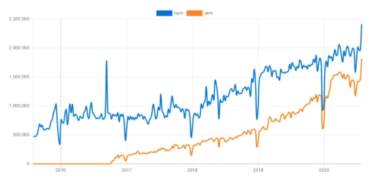
Репозитории на GH
Yarn
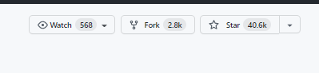
npm
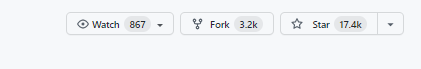
Скорость
Локфайлы
package-lock.json
yarn.lock
Node Semver
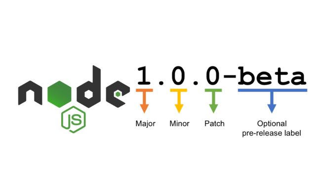Еще немного о Nodejs semver
* - Звездочки - 1.2.* (>=1.2.0 < 1.3.0)
~ - Тильды - ~1.2.3 (>=1.2.3 < 1.3.0)
^ - Крышечки - ^0.2.3 (>=0.2.3 < 0.3.0)
yarn.lock
"@babel/code-frame@7.10.4":
version "7.10.4"
resolved "https://registry.yarnpkg.com/@babel/code-frame/-/code-frame-7.10.4.tgz#168da1a36e90da68ae8d49c0f1b48c7c6249213a"
integrity sha512-vG6SvB6oYEhvgisZNFRmRCUkLz11c7rp+tbNTynGqc6mS1d5ATd/sGyV6W0KZZnXRKMTzZDRgQT3Ou9jhpAfUg==
dependencies:
"@babel/highlight" "^7.10.4"
"@babel/code-frame@7.12.11":
version "7.12.11"
resolved "https://registry.yarnpkg.com/@babel/code-frame/-/code-frame-7.12.11.tgz#f4ad435aa263db935b8f10f2c552d23fb716a63f"
integrity sha512-Zt1yodBx1UcyiePMSkWnU4hPqhwq7hGi2nFL1LeA3EUl+q2LQx16MISgJ0+z7dnmgvP9QtIleuETGOiOH1RcIw==
dependencies:
"@babel/highlight" "^7.10.4"
package-lock.json
"dependencies": {
"@babel/code-frame": {
"version": "7.12.13",
"resolved": "https://registry.npmjs.org/@babel/code-frame/-/code-frame-7.12.13.tgz",
"integrity": "sha512-HV1Cm0Q3ZrpCR93tkWOYiuYIgLxZXZFVG2VgK+MBWjUqZTundupbfx2aXarXuw5Ko5aMcjtJgbSs4vUGBS5v6g==",
"dev": true,
"requires": {
"@babel/highlight": "^7.12.13"
}
},
"@babel/compat-data": {
"version": "7.14.0",
"resolved": "https://registry.npmjs.org/@babel/compat-data/-/compat-data-7.14.0.tgz",
"integrity": "sha512-vu9V3uMM/1o5Hl5OekMUowo3FqXLJSw+s+66nt0fSWVWTtmosdzn45JHOB3cPtZoe6CTBDzvSw0RdOY85Q37+Q==",
"dev": true,
"dependencies": {
...
}
}
npm-srinkwrap.json
Приоритет над package-lock.json
Публикуется командой npm pack/ npm publish
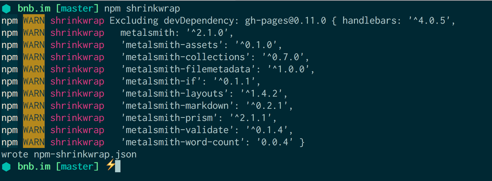
Как работают node_modules

Резолвим пакет node_modules
По относительному пути: './*', '../*'
От рута: '/*'
Из ядра Nodejs: ms(Date.now() - dumpStartTime))
Абсолютный импорт: require('react')
Абсолютный импорт
Ищем папку node_modules
node_modules есть ? пытаемся зарезолвить : идем на уровень выше
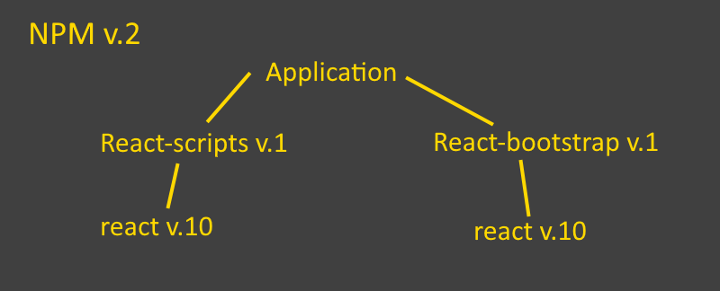
- Нет переиспользования пакетов
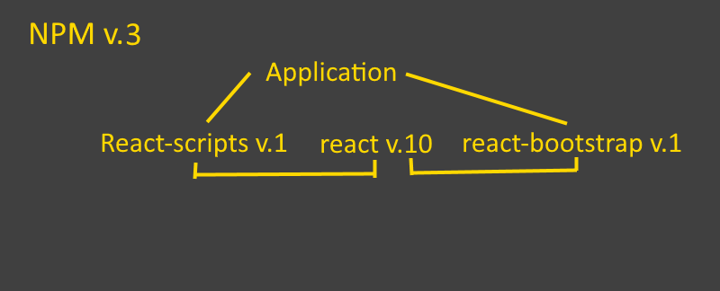
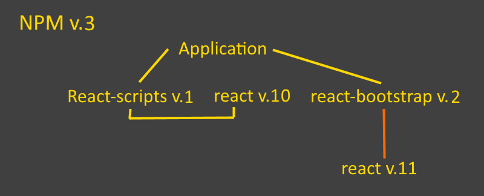
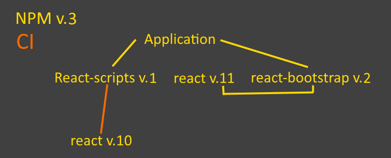
- Потенциальные баги!
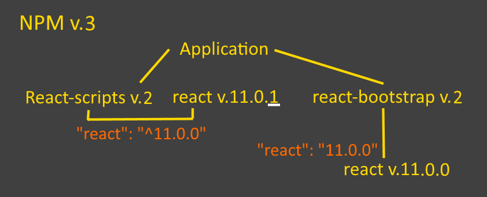
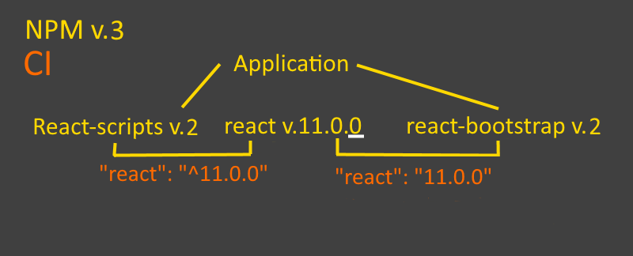
Детерминированная структура node_modules
Yarn - в пределах одной версии (1, 2 или 3).
Npm 5+ - кроссверсионно.